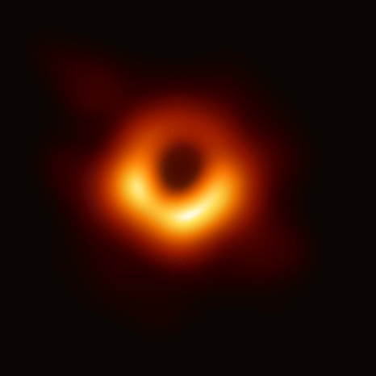
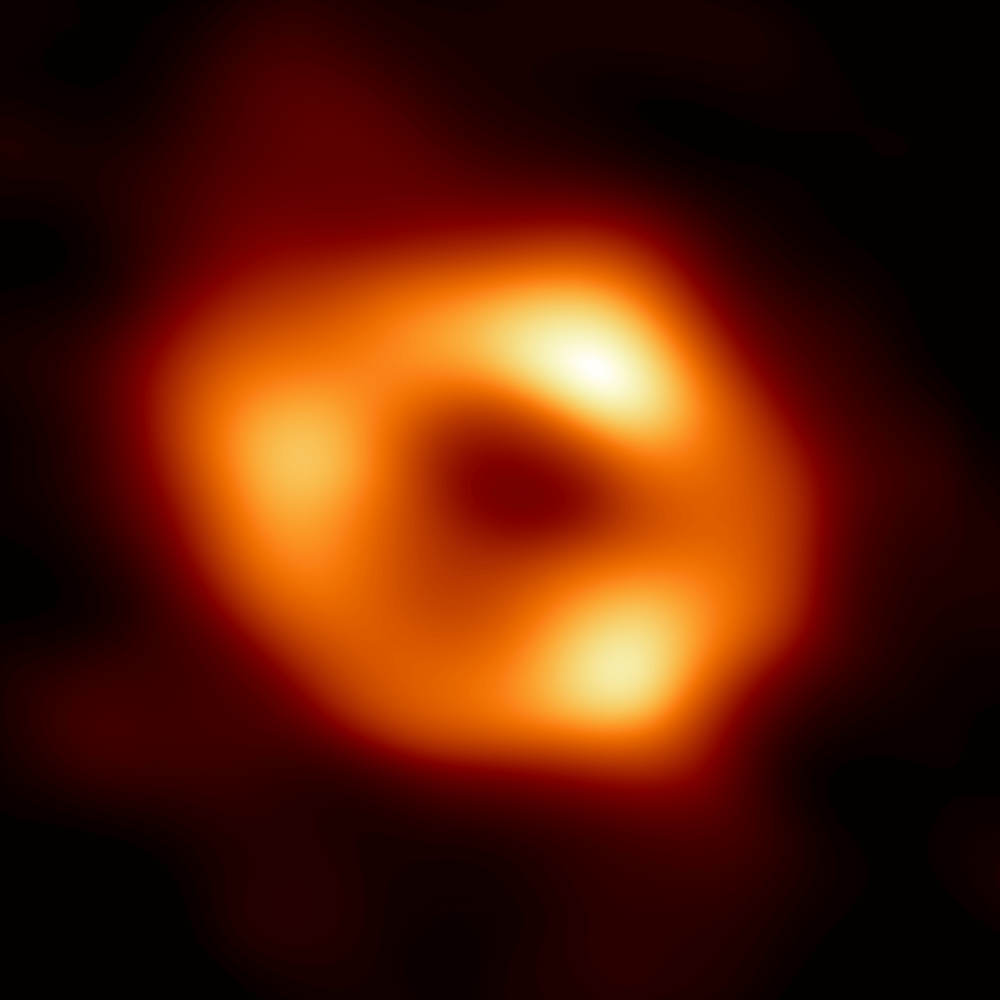

Uma forma de visualizarmos melhor a gravidade como a manifestação da curvatura do espaço-tempo é o modelo da cama elástica:

Neste modelo, o tecido da cama elástica representa duas dimensões espaciais do espaço-tempo. Na ausência de massa/energia, o espaço-tempo se mantém plano:

Porém, na presença de uma massa, o tecido se deforma, assim como a Terra deforma o Espaço-Tempo a sua volta:

Outros corpos que passem por essa região curva, então, terão suas trajetórias “desviadas” por ela:

Na verdade, esses corpos só estão seguindo o caminho mais reto para eles (uma geodésica no Espaço-Tempo), mas esse caminho é modificado pela própria curvatura do Espaço-Tempo!
Vale ressaltar, porém, que esse modelo possui algumas falhas: A primeira delas é só conseguir representar duas das quatro dimensões em que vivemos, dando a impressão de que não estamos totalmente envoltos nessas quatro dimensões. A imagem abaixo nos ajuda a visualiza melhor que, na verdade, a gravidade deforma o Espaço-Tempo em todas as direções a nossa volta:

Mas, mesmo assim, essa imagem também não contempla a deformação da dimensão temporal. É importante lembrar, como vimos anteriormente, que o tempo também é afetado pela gravitação. Afinal, quanto mais próximos estamos de um objeto massivo, mais devagar o tempo passa para nós!
Com isso, podemos resumir as ideias centrais da Teoria da Relatividade Geral em uma única frase:

Mas, afinal, onde a Teoria da Relatividade Geral é importante?
Uma forma de julgar quão importantes são as correções da Relatividade Geral a uma certa situação física é calculando a quantidade $\epsilon = GM/(Rc^2)$, onde $G$ é a constante gravitacional, $M$ é a massa característica do sistema, $R$ é seu tamanho característico e $c$ é a velocidade da luz no vácuo. Essa é um número (adimensional!) que, quando pequeno, indica que a descrição Newtoniana é adequada; e quando grande (próximo de 1), indica que as correções relativísticas são importantes.
Por exemplo, para um satélite em órbita ao redor da Terra, tomamos $M \approx 6 \times 10^{24}$ kg (massa da Terra) e $R \approx$ 42 mil km (raio da órbita), chegando a $\epsilon \approx 0.0000000001$. Esse número é extremamente pequeno, mas, como vimos, tem efeitos observáveis no funcionamento de instrumentos de precisão como o GPS. |
Já no caso da órbita de Mercúrio em torno do Sol, podemos tomar $M \approx 2 \times 10^{30}$ kg (massa do Sol) e $R \approx$ 50 milhões de km (raio médio da órbita), chegando a $\epsilon \approx 0.00000003$. Esse número é maior que o anterior, mas ainda muito pequeno! Ainda assim, correções relativísticas na órbita de Mercúrio são observadas há mais de um século! Como bem vimos anteriormente, a órbita de Mercúrio apresenta uma precessão que antes não tinha explicação visível pelas leis newtonianas, mas que foi finalmente explicada pela Relatividade Geral! |
Saindo do sistema solar, encontramos objetos mais "relativísticos": estrelas com a massa parecida com a do Sol, mas muito menores. Por exemplo, o raio de anãs brancas é $R \approx 7000$ km, e temos $\epsilon \approx 0.0002$. Para estrelas de nêutrons, com raio de cerca de 10 km e massa comparável à do Sol, $\epsilon \approx 0.2$!
A Relatividade Geral prevê a existência de astros ainda mais compactos: os buracos negros, com $\epsilon \approx 0.5$. Esses objetos são tão densos que curvam o espaço-tempo ao seu redor de forma absurda, fazendo que a atração gravitacional ao redor dele seja tão intensa que a partir de um certo ponto nem mesmo a luz consiga escapar de sua influência!
Apesar da previsão da existência de buracos negros ter surgido poucos anos após a publicação da Teoria da Relatividade Geral, só recentemente foi possível fotografá-los. Para isso, foi preciso a união de diversos telescópios ao redor do globo que quando observavam juntos criavam um telescópio virtual do tamanho da Terra! A primeira foto (à esquerda), foi tirada em 2019 e capturou o buraco negro no centro da galáxia Messier 87. A segunda (à direita), foi tirada em 2022, e fotografou o Sagittarius A*, o buraco negro localizado no centro da nossa galáxia!
|  |  |